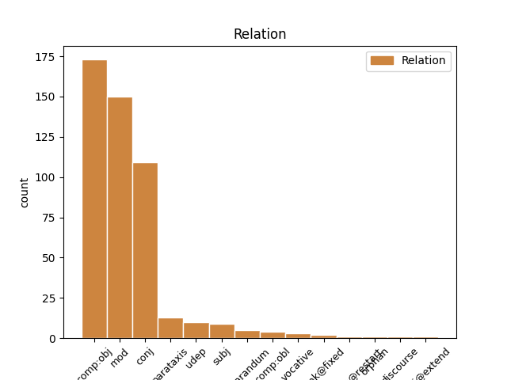
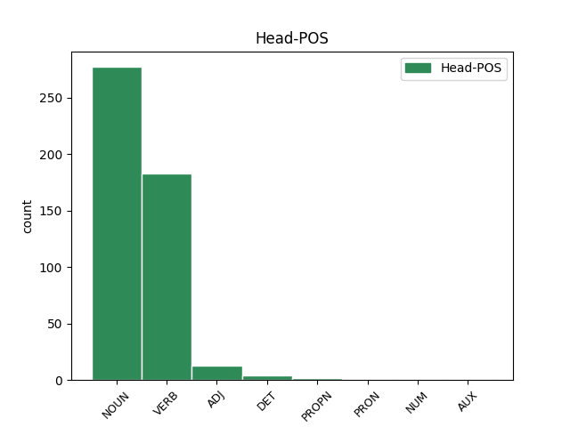
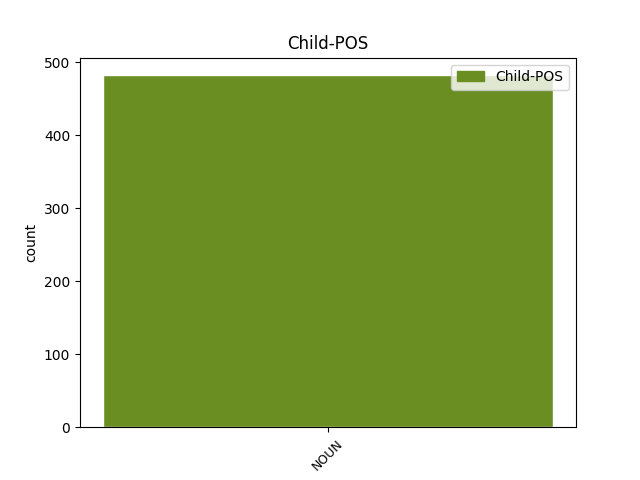

Distribution of features within this leaf



Agreement Rules sorted by frequency.
- When the dependent token is the direct object complements(comp:obj) of the head token, and the dependent token is NOUN.
1 reklamo reklama NOUN Ncfsa Case=Acc|Gender=Fem|Number=Sing 3 comp:obj _ msd=Sozet|word=reklamo
2 sem _ _ _ _ 0 _ _ _
3 videla videti VERB Vmbp-sf Gender=Fem|Number=Sing|VerbForm=Part 0 _ _ _
4 nisem _ _ _ _ 0 _ _ _
5 pa _ _ _ _ 0 _ _ _
6 še _ _ _ _ 0 _ _ _
7 pila _ _ _ _ 0 _ _ _
1 kvinton _ _ _ _ 0 _ _ _
2 plošča plošča NOUN Ncfsn Case=Nom|Gender=Fem|Number=Sing 0 _ _ _
3 razirklinga _ _ _ _ 0 _ _ _
4 in _ _ _ _ 0 _ _ _
5 skladba skladba NOUN Ncfsn Case=Nom|Gender=Fem|Number=Sing 2 conj _ msd=Sozei|word=skladba
6 led _ _ _ _ 0 _ _ _
1 cilj _ _ _ _ 0 _ _ _
2 smisel _ _ _ _ 0 _ _ _
3 tega _ _ _ _ 0 _ _ _
4 projekta _ _ _ _ 0 _ _ _
5 pa _ _ _ _ 0 _ _ _
6 je _ _ _ _ 0 _ _ _
7 to _ _ _ _ 0 _ _ _
8 ne _ _ _ _ 0 _ _ _
9 da _ _ _ _ 0 _ _ _
10 se _ _ _ _ 0 _ _ _
11 dobijo _ _ _ _ 0 _ _ _
12 informacije _ _ _ _ 0 _ _ _
13 direktno _ _ _ _ 0 _ _ _
14 od _ _ _ _ 0 _ _ _
15 uporabnikov uporabnik NOUN Ncmpg Case=Gen|Gender=Masc|Number=Plur 0 _ _ _
16 objektov objekt NOUN Ncmpg Case=Gen|Gender=Masc|Number=Plur 15 mod _ msd=Sommr|word=objektov
1 uuu _ _ _ _ 0 _ _ _
2 nisem _ _ _ _ 0 _ _ _
3 zdajle _ _ _ _ 0 _ _ _
4 za _ _ _ _ 0 _ _ _
5 raču _ _ _ _ 0 _ _ _
6 [gap] _ _ _ _ 0 _ _ _
7 nep nep NOUN Ncmsn Case=Nom|Gender=Masc|Number=Sing 0 _ _ _
8 nep nep NOUN Ncmsn Case=Nom|Gender=Masc|Number=Sing 7 parataxis _ msd=Somei|word=Nep
9 ja _ _ _ _ 0 _ _ _
1 pozornost pozornost NOUN Ncfsn Case=Nom|Gender=Fem|Number=Sing 5 subj _ msd=Sozei|word=pozornost
2 eee _ _ _ _ 0 _ _ _
3 in _ _ _ _ 0 _ _ _
4 analiza _ _ _ _ 0 _ _ _
5 močnejša močen ADJ Agcfsn Case=Nom|Degree=Cmp|Gender=Fem|Number=Sing 0 _ _ _
1 eee _ _ _ _ 0 _ _ _
2 to _ _ _ _ 0 _ _ _
3 je _ _ _ _ 0 _ _ _
4 eem _ _ _ _ 0 _ _ _
5 eee _ _ _ _ 0 _ _ _
6 rastlina _ _ _ _ 0 _ _ _
7 oddaja _ _ _ _ 0 _ _ _
8 kisik kisik NOUN Ncmsan Animacy=Inan|Case=Acc|Gender=Masc|Number=Sing 15 reparandum _ msd=Sometn|word=kisik
9 ki _ _ _ _ 0 _ _ _
10 ga _ _ _ _ 0 _ _ _
11 j _ _ _ _ 0 _ _ _
12 [gap] _ _ _ _ 0 _ _ _
13 eee _ _ _ _ 0 _ _ _
14 ogljikov _ _ _ _ 0 _ _ _
15 dioksid dioksid NOUN Ncmsan Animacy=Inan|Case=Acc|Gender=Masc|Number=Sing 0 _ _ _
16 ki _ _ _ _ 0 _ _ _
17 ga _ _ _ _ 0 _ _ _
18 ne _ _ _ _ 0 _ _ _
19 potrebuje _ _ _ _ 0 _ _ _
1 aha _ _ _ _ 0 _ _ _
2 kul _ _ _ _ 0 _ _ _
3 eee _ _ _ _ 0 _ _ _
4 čakaj _ _ _ _ 0 _ _ _
5 še _ _ _ _ 0 _ _ _
6 kako _ _ _ _ 0 _ _ _
7 vprašanje _ _ _ _ 0 _ _ _
8 eee _ _ _ _ 0 _ _ _
9 to _ _ _ _ 0 _ _ _
10 pa _ _ _ _ 0 _ _ _
11 eee _ _ _ _ 0 _ _ _
12 če _ _ _ _ 0 _ _ _
13 če _ _ _ _ 0 _ _ _
14 nabavim _ _ _ _ 0 _ _ _
15 to _ _ _ _ 0 _ _ _
16 imate _ _ _ _ 0 _ _ _
17 k _ _ _ _ 0 _ _ _
18 [gap] _ _ _ _ 0 _ _ _
19 kako _ _ _ _ 0 _ _ _
20 je _ _ _ _ 0 _ _ _
21 tako _ _ _ _ 0 _ _ _
22 zdaj _ _ _ _ 0 _ _ _
23 ena _ _ _ _ 0 _ _ _
24 cena _ _ _ _ 0 _ _ _
25 za _ _ _ _ 0 _ _ _
26 en _ _ _ _ 0 _ _ _
27 mesec _ _ _ _ 0 _ _ _
28 če _ _ _ _ 0 _ _ _
29 bi _ _ _ _ 0 _ _ _
30 jaz _ _ _ _ 0 _ _ _
31 to _ _ _ _ 0 _ _ _
32 hotel _ _ _ _ 0 _ _ _
33 pač _ _ _ _ 0 _ _ _
34 en _ _ _ _ 0 _ _ _
35 mesec mesec NOUN Ncmsan Animacy=Inan|Case=Acc|Gender=Masc|Number=Sing 36 udep _ msd=Sometn|word=mesec
36 hotel hoteti VERB Vmpp-sm Aspect=Imp|Gender=Masc|Number=Sing|VerbForm=Part 0 _ _ _
37 to _ _ _ _ 0 _ _ _
38 jest _ _ _ _ 0 _ _ _
39 ? _ _ _ _ 0 _ _ _
1 kvintet _ _ _ _ 0 _ _ _
2 orsa _ _ _ _ 0 _ _ _
3 je _ _ _ _ 0 _ _ _
4 ljudsko _ _ _ _ 0 _ _ _
5 glasbo _ _ _ _ 0 _ _ _
6 približal približati VERB Vmep-sm Aspect=Perf|Gender=Masc|Number=Sing|VerbForm=Part 0 _ _ _
7 številnim _ _ _ _ 0 _ _ _
8 novim _ _ _ _ 0 _ _ _
9 poslušalcem poslušalec NOUN Ncmpd Case=Dat|Gender=Masc|Number=Plur 6 comp:obl _ msd=Sommd|word=poslušalcem
10 skupina _ _ _ _ 0 _ _ _
11 pa _ _ _ _ 0 _ _ _
12 je _ _ _ _ 0 _ _ _
13 osvojila _ _ _ _ 0 _ _ _
14 tudi _ _ _ _ 0 _ _ _
15 švedsko _ _ _ _ 0 _ _ _
16 različico _ _ _ _ 0 _ _ _
17 nagrade _ _ _ _ 0 _ _ _
18 grammy _ _ _ _ 0 _ _ _
1 [speaker:laughter] _ _ _ _ 0 _ _ _
2 herman _ _ _ _ 0 _ _ _
3 ja _ _ _ _ 0 _ _ _
4 [audience:laughter] _ _ _ _ 0 _ _ _
5 je _ _ _ _ 0 _ _ _
6 bil _ _ _ _ 0 _ _ _
7 pri _ _ _ _ 0 _ _ _
8 njih _ _ _ _ 0 _ _ _
9 doma _ _ _ _ 0 _ _ _
10 ne _ _ _ _ 0 _ _ _
11 pol _ _ _ _ 0 _ _ _
12 pa _ _ _ _ 0 _ _ _
13 je _ _ _ _ 0 _ _ _
14 rekel _ _ _ _ 0 _ _ _
15 d _ _ _ _ 0 _ _ _
16 [gap] _ _ _ _ 0 _ _ _
17 vem _ _ _ _ 0 _ _ _
18 da _ _ _ _ 0 _ _ _
19 pač _ _ _ _ 0 _ _ _
20 ona _ _ _ _ 0 _ _ _
21 ženska ženska NOUN Ncfsn Case=Nom|Gender=Fem|Number=Sing 0 _ _ _
22 gor _ _ _ _ 0 _ _ _
23 ne _ _ _ _ 0 _ _ _
24 eee _ _ _ _ 0 _ _ _
25 v _ _ _ _ 0 _ _ _
26 njegova _ _ _ _ 0 _ _ _
27 žena _ _ _ _ 0 _ _ _
28 ne _ _ _ _ 0 _ _ _
29 štiri _ _ _ _ 0 _ _ _
30 ure ura NOUN Ncfpa Case=Acc|Gender=Fem|Number=Plur 21 orphan _ msd=Sozmt|word=ure
31 gor _ _ _ _ 0 _ _ _
32 na _ _ _ _ 0 _ _ _
33 facebooku _ _ _ _ 0 _ _ _
34 ne _ _ _ _ 0 _ _ _
35 pa _ _ _ _ 0 _ _ _
36 da _ _ _ _ 0 _ _ _
37 [audience:laughter] _ _ _ _ 0 _ _ _
38 ima _ _ _ _ 0 _ _ _
39 poslikano _ _ _ _ 0 _ _ _
40 bajto _ _ _ _ 0 _ _ _
41 okoli _ _ _ _ 0 _ _ _
42 in _ _ _ _ 0 _ _ _
43 okoli _ _ _ _ 0 _ _ _
44 ne _ _ _ _ 0 _ _ _
1 hvala hvala NOUN Ncfsn Case=Nom|Gender=Fem|Number=Sing 3 discourse _ msd=Sozei|word=hvala
2 lahko _ _ _ _ 0 _ _ _
3 noč noč NOUN Ncfsa Case=Acc|Gender=Fem|Number=Sing 0 _ _ _
Disagree Examples:
1 v _ _ _ _ 0 _ _ _
2 zvezek _ _ _ _ 0 _ _ _
3 potem _ _ _ _ 0 _ _ _
4 bom _ _ _ _ 0 _ _ _
5 pa _ _ _ _ 0 _ _ _
6 tretjič _ _ _ _ 0 _ _ _
7 prebrala _ _ _ _ 0 _ _ _
8 bom _ _ _ _ 0 _ _ _
9 pa _ _ _ _ 0 _ _ _
10 še _ _ _ _ 0 _ _ _
11 jaz _ _ _ _ 0 _ _ _
12 izraz izraz NOUN Ncmsan Animacy=Inan|Case=Acc|Gender=Masc|Number=Sing 13 comp:obj _ msd=Sometn|word=izraz
13 napisala napisati VERB Vmep-sf Aspect=Perf|Gender=Fem|Number=Sing|VerbForm=Part 0 _ _ _
14 na _ _ _ _ 0 _ _ _
15 tablo _ _ _ _ 0 _ _ _
1 samo _ _ _ _ 0 _ _ _
2 to _ _ _ _ 0 _ _ _
3 ne _ _ _ _ 0 _ _ _
4 vem _ _ _ _ 0 _ _ _
5 če _ _ _ _ 0 _ _ _
6 je _ _ _ _ 0 _ _ _
7 že _ _ _ _ 0 _ _ _
8 preden _ _ _ _ 0 _ _ _
9 zapusti _ _ _ _ 0 _ _ _
10 vrtec vrtec NOUN Ncmsan Animacy=Inan|Case=Acc|Gender=Masc|Number=Sing 0 _ _ _
11 šolo šola NOUN Ncfsa Case=Acc|Gender=Fem|Number=Sing 10 conj _ msd=Sozet|word=šolo
12 dijaški _ _ _ _ 0 _ _ _
13 dom _ _ _ _ 0 _ _ _
14 a _ _ _ _ 0 _ _ _
15 ne _ _ _ _ 0 _ _ _
1 samo _ _ _ _ 0 _ _ _
2 to _ _ _ _ 0 _ _ _
3 ne _ _ _ _ 0 _ _ _
4 vem _ _ _ _ 0 _ _ _
5 če _ _ _ _ 0 _ _ _
6 je _ _ _ _ 0 _ _ _
7 že _ _ _ _ 0 _ _ _
8 preden _ _ _ _ 0 _ _ _
9 zapusti _ _ _ _ 0 _ _ _
10 vrtec _ _ _ _ 0 _ _ _
11 šolo šola NOUN Ncfsa Case=Acc|Gender=Fem|Number=Sing 0 _ _ _
12 dijaški _ _ _ _ 0 _ _ _
13 dom dom NOUN Ncmsan Animacy=Inan|Case=Acc|Gender=Masc|Number=Sing 11 conj _ msd=Sometn|word=dom
14 a _ _ _ _ 0 _ _ _
15 ne _ _ _ _ 0 _ _ _
1 glej _ _ _ _ 0 _ _ _
2 naše _ _ _ _ 0 _ _ _
3 otroke _ _ _ _ 0 _ _ _
4 ki _ _ _ _ 0 _ _ _
5 so _ _ _ _ 0 _ _ _
6 tisto _ _ _ _ 0 _ _ _
7 pismo pismo NOUN Ncnsa Case=Acc|Gender=Neut|Number=Sing 9 comp:obj _ msd=Soset|word=pismo
8 ravnateljici _ _ _ _ 0 _ _ _
9 napisali napisati VERB Vmep-pm Aspect=Perf|Gender=Masc|Number=Plur|VerbForm=Part 0 _ _ _
1 glej _ _ _ _ 0 _ _ _
2 naše _ _ _ _ 0 _ _ _
3 otroke _ _ _ _ 0 _ _ _
4 ki _ _ _ _ 0 _ _ _
5 so _ _ _ _ 0 _ _ _
6 tisto _ _ _ _ 0 _ _ _
7 pismo _ _ _ _ 0 _ _ _
8 ravnateljici ravnateljica NOUN Ncfsd Case=Dat|Gender=Fem|Number=Sing 9 comp:obl _ msd=Sozed|word=ravnateljci
9 napisali napisati VERB Vmep-pm Aspect=Perf|Gender=Masc|Number=Plur|VerbForm=Part 0 _ _ _